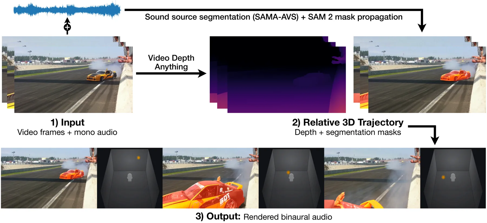
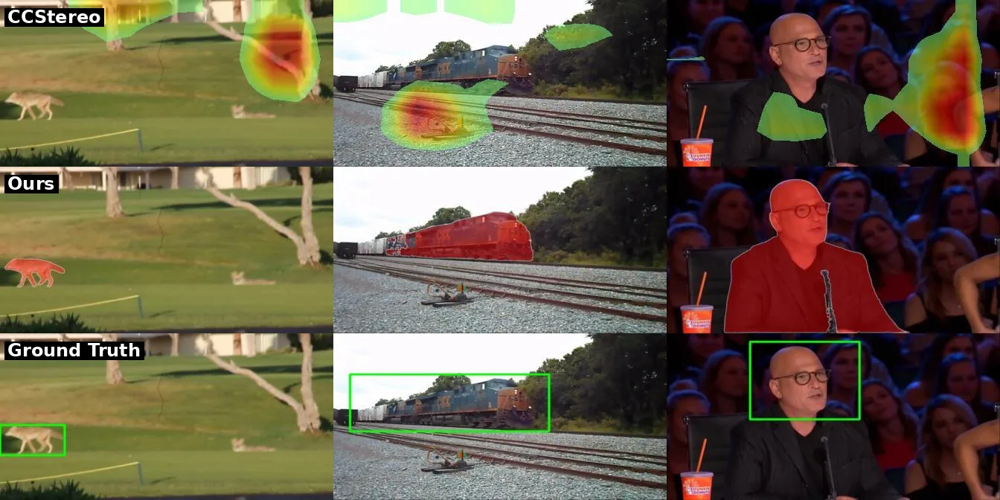
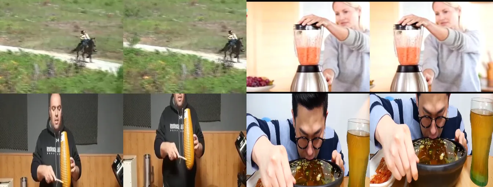
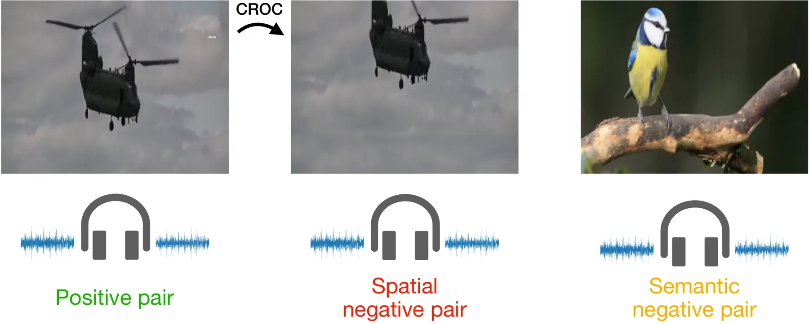
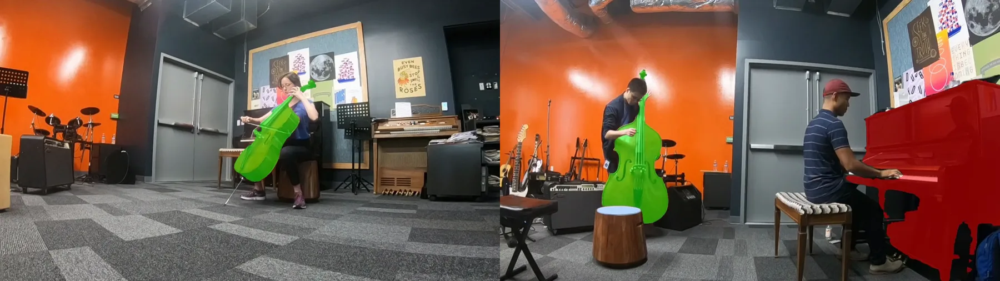

用单声道视频学空间音频-视觉联合表征
Learning Spatially Aware Audio-Visual Features from Videos with Mono Audio
一句话：它用“几何估计 + 渲染”把没有空间标注的单声道数据变成有空间监督的数据。这个“用估计几何生成监督”的套路与我们做伪标签训练同源：代价是标签精度上限由深度估计决定，收益是数据规模可以放大两个数量级。
VGG-SS horizontal detection
FAIR-Play zero-shot horizontal
Spatialized training videos
作者、单位与技术谱系 · Research context
作者与单位
研究脉络
- AVSA（音视频空间对齐预训练）方法基座关系：本文的 pretext task 直接沿用 AVSA 的思路——用不同视角造成的空间错位构造负样本；差别是 AVSA 需要 360° 视频，本文把它改造成适用于普通视场的 CROC。[论文 §4.2 与参考文献 [27]]
- BAT / Spatial-AST 双耳编码器技术基座关系：音频端直接用它的预训练权重作为空间音频先验，本文只做继续训练，因此“单耳模型不懂空间”这一对比前提部分被这个初始化抵消。[论文 §4.3 与参考文献 [40]]
- CCStereo / Mono2Binaural 双耳生成任务上游关系：这两条线代表“从单声道生成双耳”的既有做法，本文既把它们当基线，也把自己的表征插进它们的框架里替换视觉编码器。[论文 §6.2 与 Table 3]
合作网络
- Georgia Tech ↔ Dolby LaboratoriesGeorgia Institute of Technology → Dolby Laboratories关系：共同署名 + 实习[论文 HTML 作者栏与脚注]
- Dolby Atmos Renderer → 空间化数据Dolby Atmos Renderer → 空间化 VGGSound关系：技术依赖（工业渲染器）[论文 §3.4 双耳渲染]
- FAIR-Play / MUSIC-Stereo / VGGSound → 评测FAIR-Play、MUSIC-Stereo、VGGSound → 空间与语义任务关系：数据依赖[论文 §5 与 Table 1]
单位与角色来自作者栏与脚注（† Georgia Tech、♯ Dolby）。Dolby Atmos Renderer 是工业软件依赖，论文没有开源管线代码，因此“可复现性”受限于该渲染器。
方法本质拆解 · What actually changed
是不是微调？
是继续训练：音频编码器 Spatial-AST（BAT 使用的双耳编码器，预训练过声源距离/方向预测）全参微调；视觉编码器 DINOv3 ViT-B/16 只对 QKV 做 rank-8 LoRA；两端各接一个两层 MLP 投到 512 维。共 20 个 epoch，前 10 个只训语义对比损失，后 10 个加空间对比损失，温度 0.07，训练片段 1 秒、32 kHz、单帧 256×336。
有没有额外约束？
数据构造有三条硬假设：每个视频只有一个主声源（多声源与离屏声源被过滤）、声音是质心处的点源、深度用每视频最大深度归一化成相对值而不追求米制。增强侧有位移下限：只有当某侧可裁距离 ≥0.1 时才允许用该侧做 CROC，避免产生不可辨的微小位移。
推理/后端到底做了什么？
推理只做一次双塔前向：1 秒双耳波形进 Spatial-AST、单帧进 DINOv3，各自池化成 512 维后算余弦相似度；空间错位检测就是比较“音频-对齐帧”与“音频-错位帧”的相似度谁更高。没有跟踪、没有建图、没有渲染，渲染只发生在离线造数据阶段。
方法本质是什么？
本质是把“空间”这个缺失的监督信号用几何估计补出来：深度 + 分割给出声源轨迹，渲染器把轨迹变成双耳线索，于是空间关系变成了可对比的正负样本对。它没有做的是：没有解决多声源与扩展声源、没有估计米制距离、也没有把音频用于几何估计（信息是单向的）。
输入是单声道视频与音频，改变的位置是训练数据（用分割 + 单目深度 + 双耳渲染把 18.1 万条视频空间化），动作是用 CROC 制造空间错位难负样本做对比学习，直接效果是空间错位检测从 70.3% 提到 92.3%，而语义检索基本持平。

桥接价值Bridge
桥接价值
我们没有“真值标注”，但有大量单声道/单传感器采集，这篇的做法提供了一个可复制的模板：用现成模型估计出几何量（这里是声源 3D 轨迹），再用渲染器把它变成另一种模态的“真值”，从而把无标注数据变成有监督数据。这套逻辑可以直接类比到我们的伪标签：用深度估计 + 位姿生成点云标签，再反过来训练前端，但要像它一样把“标签来自估计”这件事在消融里量化。另一个可借点是 CROC 的负样本构造：不改内容、只改空间关系，就能逼模型学到“位置”这个维度，这比随机换样本的负采样更针对空间任务。
方法与模块Method
方法摘要
数据管线四步：SAMA-AVS 在五个均匀采样帧上分割发声体，取包围盒喂给 SAM 2 把掩码传播到全视频并取质心得到 2D 轨迹；Video Depth Anything 给出质心处深度并按视频最大深度归一化到 [0,1]，得到相对 3D 轨迹；AudioSep 按类别文本分离主音源与背景；最后由 Dolby Atmos Renderer 把主音源放到该轨迹上渲染双耳音频，背景作为弥散源加入。训练用 InfoNCE，语义负样本来自同批次其他样本，空间负样本由 CROC 生成：只在“可裁距离 ≥0.1”的边上随机裁 0.1–L_s，正样本则按同样裁量均分到两侧以保持相对位置，再一起缩放。前 10 个 epoch 只训语义损失，后 10 个 epoch 加空间损失；音频编码器全参微调，视觉编码器只对 QKV 做 rank-8 LoRA。
可迁移模块
第一是“估计几何 → 渲染/投影 → 新模态监督”的三段式，任何跨模态弱监督都可以照这个结构搭。第二是 CROC 这种“保持语义、只改空间”的增强，可以用在视觉定位与重定位上：同一帧做有界裁剪当作空间错位负样本，迫使特征区分“物体是什么”和“物体在哪”。第三是它的消融口径：把 CROC 去掉后模型在 VGG-SS 上从 92.3% 掉到 68.7%，说明增益来自空间监督而不是数据量，这种“关掉核心模块看是否退回基线”的验证值得照抄。

证据Evidence
关键证据与数字
空间错位检测（Table 2）：本文模型在空间化 VGG-SS 上水平 92.3%、垂直 90.5%，在 VGGSound 上微调过的 CCStereo 为 70.3%/71.0%，语义模型 CAV-MAE 仅 52.0%/54.2%（接近随机 50%）；真实双耳数据 FAIR-Play 上零样本 79.1%/68.7%，加线性探测 81.7%/76.5%，对比域内训练的 CCStereo 80.9%/77.4%。双耳生成（Table 3）：把 CCStereo 的视觉编码器换成本文表征后 STFT 从 0.801 降到 0.798、包络距离从 0.130 降到 0.129；Mono2Binaural 换编码器后 STFT 从 0.861 降到 0.819。语义检索（Table 4）则相反：音频→视觉 R@1 为 18.0%，低于 CAV-MAE 的 20.3%。
边界与下一步Limits & Next Step
边界与风险
作者明确承认两条限制：假设声音是物体质心处的点源，且对动态场景的支持与评测有限。这意味着多声源、扩展声源（如雨声、车流）与快速运动场景都会失真。方法层面还有两个待核验项：相对深度按每视频最大深度归一化，跨视频不一致，渲染出的距离尺度与真实双耳线索（ITD/ILD）未必匹配；数据管线依赖 SAMA-AVS、SAM 2、VDA、AudioSep 四个模型串联，任一环失效都会悄悄产出错误“真值”，论文没有报告管线的失败率或人工抽检比例。
下一步实验
第一步在我们自己的采集上做“估计几何 → 伪标签 → 训练”闭环的小规模验证：用深度估计生成伪点云标签，训练一个轻量前端，再与真实标注训练的同结构模型比较，明确伪标签的精度损失。第二步量化管线误差传导：人为扰动深度（5%/10%）与掩码（膨胀/腐蚀），看下游任务掉多少，这决定这套伪标签能用在哪些任务上。第三步复用“只改空间、不改语义”的负样本构造，在我们的重定位描述子训练中加有界裁剪负样本，比较召回率与误匹配率。







